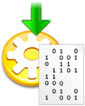

In some ways, writing a computer program is a little like magic. You can think of your computer keyboard like Harry Potter's magic wand or like Aladdin's magic lamp. You type in the correct incantation, and, if you do it just right, the compiler will accept your request and compile and run your program.
Of course, programming really isn't magic; instead of memorizing a dusty volume of "Open Sesame", in this class, you'll learn the meaning behind each of the phrases that make up your Java programs. (I have to admit, though, that there will still be times when I'll wave my hands, and say something that sounds suspiciously like "Abracadabara". But those times will get much rarer as the semester goes on.)
Java Mechanics
To create your own Java programs,
you follow a mechanical process, a well-defined
set of steps called the edit-compile-run cycle
that looks like this: ")
- Create your source code
- Compile the code to produce object, or bytecode
- If syntax errors occur, return to your editor to fix them
- Run your program using appletviewer or the Java interpreter
- If runtime errors occur, return to your editor to fix them
Learning this process is necessary before you can learn to program, but it is not the same as learning how to program; you must master the process, but mastering the process doesn't mean you'll write correct and elegant programs.
Here are the steps in the process:
Edit
When you write a program in a high-level language, you write your instructions—in the form of programming language statements—using a plain text editor. The document you produce at this stage is called source code. In Java, your source code is placed into a file with the extension .java.
While you can write Java programs using a regular text editor, like Windows Notepad, your Java IDE includes a programming editor that knows all about Java's syntax rules and can display different program elements in different colors. This feature, called syntax highlighting, helps you identify inadvertent typing errors as you write your programs.
Compile

Once you've written your program, you compile it by using a software program called, (surprise!), a compiler. The compiler turns your source code into the machine language for the Java Virtual Machine, and stores that code in a new document. The "generic" name for this file is object code, but the Java-specific form of object code is called bytecode. If your program fails to compile, (if you have "grammatical" or syntax errors in your source code), then you must re-edit the code until it compiles correctly. Sun supplies a Java Development Kit (or JDK) that has a
command-line compiler named javac. Using the command-line
and the javac compiler, you can compile a Java program named
FirstApp.java like this:
 If you haven't made any syntax errors, the compiler places the
Java bytecode it generates in a new file named
FirstApp.class. If there are syntax mistakes,
the compiler reports them on the command-line like this,
and no class file is generated.
If you haven't made any syntax errors, the compiler places the
Java bytecode it generates in a new file named
FirstApp.class. If there are syntax mistakes,
the compiler reports them on the command-line like this,
and no class file is generated.

Note: On Windows or Linux, you can only use the javac compiler like this if you have downloaded and installed the Sun JDK (or, if you're on a Mac, where the JDK is installed automatically). Since you don't absolutely have to have the JDK for this class, these "incantations" might not work on your machine.
Once a program compiles without errors, it is syntactically correct. It still may contain runtime or logic errors, however. Runtime errors are errors that cause your program to "crash" when it runs, usually displaying a nasty error message on the screen. Logic errors occur when your program produces the wrong output; it may give the wrong answer or carry out an action at the wrong time, like giving you a "C" when your percentage grade in the class is exactly 80%. (This kind of logic error is called a fencepost error).
Run
 Once your program compiles, you run it. All high-level
languages require a significant amount of additional
machine-language code—in addition to the code you've
written—before your program will actually run. This
additional code is contained in collections of classes known as
libraries. In Java, these different libraries are placed in special zip files
known as Java Archives or JAR files.
Once your program compiles, you run it. All high-level
languages require a significant amount of additional
machine-language code—in addition to the code you've
written—before your program will actually run. This
additional code is contained in collections of classes known as
libraries. In Java, these different libraries are placed in special zip files
known as Java Archives or JAR files.
How this additional code is added to your program varies from language to language and from system to system. Generically, this is called linking, when library code is combined with the code you've written to produce and executable image in memory that can be run. With Java, this happens behind the scenes as part of the process of compiling your program, and then, again, when you run your program. There is no separate explicit linking step that you have to worry about.
Internally, Java uses something called the classpath (or build path) to know which libraries or folders to search for additional classes. Your IDE will normally take care of this for you when you use only the classes available with the JRE. When you use additional library classes (like we'll do with the ACM JTF class libraries and the JUnit testing libraries), you'll have to explicitly adjust the build path inside your IDE.
Testing
 When you run your program, the first thing
you'll want to do is to verify that it runs as you
expect it. This process is called testing. It
is not uncommon to find that your program has some
logic errors that can only be discovered when the
program runs. These errors may even make your program
"crash". These kinds of errors are called runtime
errors
When you run your program, the first thing
you'll want to do is to verify that it runs as you
expect it. This process is called testing. It
is not uncommon to find that your program has some
logic errors that can only be discovered when the
program runs. These errors may even make your program
"crash". These kinds of errors are called runtime
errors
To fix a runtime error, you go back to the very first step—your source code—and make changes there, repeating the edit-compile-run cycle until the program runs correctly.
In addition to correctness checking, you'll also be responsible for formatting your code correctly and making sure that your style meets the CS 170 guidelines. Your program may run correctly, but still be sloppy and unreadable. A portion of your programming grade will be based on learning how to write readable code.
Practice, Practice, Practice
As you know, a good portion of your grade in this class is based on your performance on several practical programming proficiency quizzes. Since these are skill-based quizzes, there's really no way to "cram" for them; the only practical strategy is to get lots of practice.
I will give you several exercises that are similar to the problems (or a portion of the problems) on the programming quizzes that you'll take. The first quiz requires you to write simple, console-mode output programs. The first step to doing that is to follow the steps in this section (and, in Homework 2) to create, compile and test a program.
Since the quizzes are closed book, you'll need to memorize the steps you need to follow. If you haven't done so, go ahead and complete Homework 2 now, so you'll be ready for the next class session, when you'll be asked to write a couple of simple programs like this from scratch. I expect that you'll need to refer to your notes for the first one, but you should be able to get a little further on each problem.

Java Mechanics Summary
- To create a Java program, you edit your source code, compile it to produce bytecode, and then run the program using a Java Virtual Machine.
- You can use the command-line tools in the Java Development Kit (JDK) to compile and run your code, but it is easier to use a specialized Integrated Development Environment or IDE. We will use DrJava in this book.
- Mistakes discovered when you compile your programs are called syntax errors. You must correct your syntax errors and recompile your programs before you can run them.
- Runtime and logic errors occur when your program "crashes" the JVM, or when your program produces incorrect output when it is run.
- Testing is used to check for logic errors. Unit tests compare the expected output of your program, (often under several different input conditions), with the actual output produced when it runs.
- Style checking is used to make sure that your program follows the conventions required for this course.